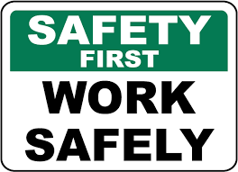

Our Product Services
We offer general contracting, construction management, design-build, and pre-construction
planning services for projects of all sizes from a single office fit-up to real estate projects.
As a full service construction company, we essentially assist our clients from the very outset
to the completion of their projects.
We become partners with our clients in understanding the five basic function of;
- Defining and establishing the scope of the construction project.
- Pre-construction project planning including preparation and scheduling of
the projects, phasing plans, budgeting/cost modeling and subcontractor
qualification.
- On-site execution of the project includes scheduling, quality control, safety
management, sub-contractor management, and project status reporting and
change management.
- Monitoring and controlling the project Closing of the project related to the
post construction activities.
PROJECT DELIVERY METHODS.
We build diverse range of projects for our clients under a variety of project delivery methods
including;
- Lump sum bid from completed drawings
- Construction management
- Design-build development
- Pre-construction services
A SNAPSHOT OF OUR SERVICES ARE;
- Construction and Maintenance of Residential Houses, Commercial and Industrial
- Construction and Maintenance of Sewerage an d Drainage Systems,
- Interior design and partitions
- Landscaping
- Construction and Maintenance of Roads,
- Construction and Maintenance of Sewerage an d Drainage Systems,
SOCIAL RESPONSIBILITY;
METZ ENGINEERING CO. LIMITED will always regard the community as one of its
key stakeholder, thus will be in hand to hand with the community through its social
activities. We will make sure that our social responsibilities are rendered as required.
OUR STRATEGIC OBJECTIVE
METZ ENGINEERING CO. LIMITED has set its five (6) year corporate strategy in the
following specific objectives:
- To become successful construction company in the construction industry
- To grow its revenue by 50% and expand its business to countrywide for the
coming five (5) years to 2030.
- To establish its long term relationship with its key stakeholders such as: clients,
consultants, lenders, and financial institutions.
KEY TO SUCCESS
The key to o ur success is our commitment to quality, our continuous investment and
training in the newest technology and our focus on values and workmanship. With METZ
ENGINEERING CO. LIMITED on your team you will find the experience, expertise and
integrity necessary to manage and complete your next project on time and within budget.
HEALTH AND SAFETY
For health and safety every employee working on site is insured whereas the site agents are
trained to give first aid, whereas every employee or any new attendant on a new or running
project are inducted for safety before working on site by the site agent who has officially
been trained and inducted for site safety and can also asses risks. Employees are also trained
on reducing the risks of injuries and are also trained on injury prevention methods, and are
also inducted on how to use hazardous and warning signs.
Occupational Health and Safety Construction Induction

The company frequently organizes, occupational health
and safety construction workshops, where all the
employees are invited to attend this workshops which give
a glance of safety methods and introduce new methods
and train on how to asses risks, prevention of accidents
and work smart ideas are introduced.